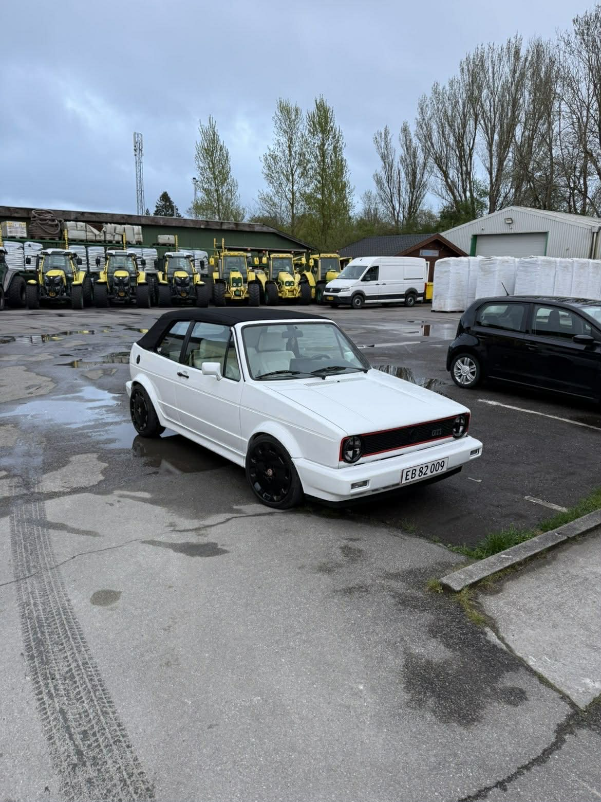

Service
Service, vedligehold og bremser til stabil daglig drift
Vi samler de klassiske værkstedsopgaver med fokus på sikkerhed, overblik og korrekt prioritering.

Hvad dækker denne service?
Vi gennemgår bilens generelle vedligehold ud fra stand, kilometer og servicehistorik. Det omfatter typisk væsker, filtre, sliddele og de punkter, der har størst betydning for daglig drift.
Ved bremser vurderer vi blandt andet skiver, klodser, funktion og slidbillede, så du før et klart billede af både sikkerhedsniveau og forventet restlevetid.
Efter gennemgangen før du en prioriteret anbefaling: hvad der bør laves nu, og hvad der kan planlægges senere uden at gå på kompromis med sikkerheden.
Målet er stabil drift og et serviceforløb, der giver mening økonomisk og teknisk.
Relateret viden om service og grundig gennemgang
Se også vores indhold om fejlfinding og fejlsøgning, service og vedligehold og klargøring før optimering.